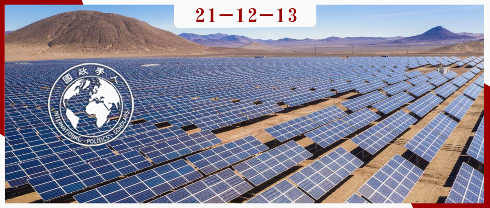
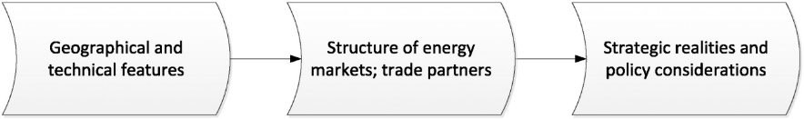

收录于合集
#可再生能源 1 个
#地缘政治 3 个
#《国际关系前沿》2021年第12期 22 个

作品简介
作者： Daniel Scholten，代尔夫特理工大学科技、政策和管理学院助理教授，荷兰克林根达尔国际关系研究所（Clingendael Institute）研究助理，致力于研究欧盟在绿色转型中的作用；Rick Bosman，鹿特丹伊斯拉姆斯大学荷兰转型研究所顾问、博士，研究兴趣为：不同政党如何塑造可再生能源转型。
编译： 王浩宇（国政学人编译员，广东外语外贸大学国际关系学院）
来源： Daniel Scholten, Rick Bosman, The geopolitics of renewables; exploring the political implications of renewable energy systems, Technological Forecasting and Social Change, 103,2016, 273-283, https://doi.org/10.1016/j.techfore.2015.10.014.
归档： 《国际关系前沿》2021年第12期，总第39期。

内容摘要
本文探讨了 可再生能源系统的地理和技术特征的潜在政治影响 。作者通过一个思维实验假设存在一个纯粹的可再生能源系统，并且该系统在所有方面都与如今的化石能源系统保持一致。首先，作者认为所有国家都可以获得某种形式的可再生能源。其次，作者发现可再生能源市场有两个主要影响：（a）国家面临“生产或购买”的决定，即它们有权选择生产或进口能源；（b）电力是主要的能源载体，这意味着基础设施的物理整合程度更高，管理要求也更严格。这两种影响衍生出两种不同的战略：（1）“大陆”战略：一个“购买决定型”的、更加集中的能源供应网络；（2）“国家”战略：一个“生产决定型”的、更加分散的能源供应网络。与以化石燃料为基础的能源系统相比，纯粹的可再生能源系统有三个显著的地缘政治影响：首先，各国战略定位从获取资源转向基础设施管理。第二，战略优势从生产者倒向消费者，以及那些能够平衡能源供给和提供存储服务的国家。最后，大多数国家向“生产型消费国”的转变可能会很大程度上减少地缘政治上的担忧。
文章导读
01
引言
不断加剧的化石燃料紧张局势和石油价格波动、不断恶化的环境条件和迫在眉睫的气候变化要求现有能源系统向更可持续的方向过渡。一方面，当前的学术争论主要是关于可再生能源系统广泛应用的经济建模研究，而针对该系统地缘政治影响的研究很少。目前几乎没有任何学术研究来探讨可再生能源的地理丰富性将如何影响能源系统的拓扑结构和能源的跨境流动。另一方面，目前国际关系学界的能源政治学文献普遍关注石油和天然气安全，几乎没有文章涉及“向可再生能源过渡的地缘政治影响”。
以上现象导致了一些有趣的思考： 可再生能源系统的地理和技术特征的潜在政治影响是什么？可再生能源及其支持技术对国家间的能源合作和冲突意味着什么？ 此外，向可再生能源的过渡能否能够解决与化石燃料相关的地缘政治挑战，亦或是仅仅以新挑战取代旧挑战？本文不是关于可再生能源过渡如何影响主要大国的相对地位或对个别国家的具体政治影响，而是关注该进程如何重塑生产国、过境国和消费国之间的博弈以及这些国家面临的战略现实和/或政治关切。作者关注的是塑造国家间可再生能源关系的一般原则。因此，本文旨在探索而非证明可再生能源的潜在地缘政治影响。
02
方法论：结构化思维实验
目前缺乏一个框架来系统地探讨和调查可再生能源的地缘政治影响，以下两个挑战十分突出。挑战一：需要将可再生能源系统的特点与能源地缘政治文献中的安全概念联系起来；挑战二，为了突出可再生能源相对于化石燃料的独特地缘政治特征，纯粹的可再生能源系统是进行对比的最佳方式。但是现实世界中不存在纯粹的可再生能源系统，因此目前的案例研究无法提供所需的实验设置，需要找到一种合适的方式来探究这种现象。
关于第一个挑战，作者借鉴了微观经济学领域的见解，将可再生能源基础设施的地理和技术特征与其对能源市场和政治的影响联系起来。至于第二个问题，作者选择设置一个结构化的思维实验。思维实验是科学研究中经常使用的一种技巧（尤其是在哲学中），被用来讨论一个假设案例及其可能的后果。思维实验使研究者能够设定清晰的研究边界，不受潜在干扰性变量的阻碍。该实验可以使研究者只关注可再生能源的地理和技术特征与其政治影响之间的联系，而忽略其他（政治经济）因素。思维实验的作用是“提供正在调查的新领域的图像。这些图像由已知现象的表现形式组成：基于已知现象的信息片段并将其以新的配置重新组合在一起，用思维模型或图像代表现实世界。思维模型的操纵是通过一个变量的选择性变化来实现的，该变量与普通实验中使用的变量类似。不同之处在于，在思维实验中，变量操纵的方法应用于实验者对现实世界的心理想象，而不是直接应用于现实模型的某个特定方面。”
使用思维实验的优点是 在头脑中进行实验比在现实世界中进行实验危险性更小，且成本效益更高 。思维实验的最大陷阱是 讨论和实验可以向各个方向进行，缺乏凝聚力和内部一致性。 为了克服这一陷阱并探索大规模利用可再生能源的潜在地缘政治影响，作者建议遵循以下组织方式进行讨论：

该实验具有三个前提： 1）现有一个纯粹的可再生能源供应系统；2）现有技术和可再生能源足以满足目前所有需求；3）现今的政治经济背景和社会文化价值观不影响推理的外部环境。
该实验的推理步骤分为三步：
（1）鉴于化石能源的供需中心以及基础设施技术在形成当前的能源系统和市场方面发挥了重要作用。因此，作者假设可再生能源的地理特征和基础设施技术在形成可再生能源系统中将发挥同样重要作用。可再生能源的主要生产地点取决于天气和地质，这在几十年内极不可能改变。
（2）通过借鉴微观经济学知识，作者解释了可再生能源系统的技术特征如何影响相关市场、市场结构和系统边界。第一个是指 产品特性、时间限制（储存可能性）和市场范围 ：可再生能源生产的周期和市场规模各不相同，贸易伙伴可能是当地性/国家性/区域性/大陆性或全球性的。第二是指 生产者和消费者的数量（多/少/单一）、进入/退出壁垒以及商品的性质（同质/异质/可替代性） ：消费者或生产者端的垄断特征或运输瓶颈越多，能源或运输工具就越被政治化、越被视为战略物品，并可能导致地缘政治紧张。 第三个问题涉及技术系统边界如何促成和约束市场运作。 例如，与联合循环天然气涡轮机或风力涡轮机相比，核电厂的运转和停运时间极大地影响了它们在价值排序中的地位，从而影响了能源市场的运作。
（3）作者在此假设，能源消费国关注供应安全，希望能源价格稳定且合理；能源生产者希望能源收入最大化，以推动其经济发展，并希望确保需求方稳定的订单；过境国有兴趣保留其在基础设施中的地位，以便为其服务换取公平的收入以及政治谈判杠杆。
03
可再生能源地缘政治学
作者在阐述了如何构建和调查可再生能源的地缘政治影响之后，继而沿着实验的三个步骤继续探讨可再生能源系统的地理和技术特征对国家间能源关系的影响。
（一）可再生能源系统的地理——基础设施组合的五个关键特征：
1.每个地区都能够获得至少某种形式的可再生源，然而，一些国家和地区的资源比其他国家和地区更丰富，它们能够更高效地利用能源发电；2.许多种类的可再生能源的生产依赖天气状况，并且只能间接性供应。3.可再生能源的发电系统可能更加分散。4.可再生能源生产需要新的稀有材料（稀土）。5.由于电力是大多数可再生能源的载体，这提高了对电力管理、运输和储备的技术要求。
（二）可再生能源对市场结构的五大影响：
1.可再生能源的广泛存在为许多国家提供了生产能源的可能性，这从根本上改变了生产国和消费国之间的权力关系。各国能够做出“生产或购买”的决定，可再生能源将处于买方市场。2.电力的技术特点和电网规模限制能源市场范围，电网往往跨越国家和大陆而不是全球，预计可再生能源市场将在国家或区域范围内存在。3.可再生能源系统可能伴随着“集中式发电”和“分散式发电”两种运行模式，这两种模式分别对应“购买”和“生产”两种战略考虑。各国需要对发电模式进行额外的商业考虑。4.电动汽车的推广增加了对生物燃料的需求。5.可再生能源发电的不稳定性强调了电力储存和平衡能力对于维持市场稳定的重要性。
（三）可再生能源的战略考虑如果要了解不同国家的具体战略，需要公正地对待生产/购买决策以及集中/分散的发电和运输选择。 为此，作者提出了两种（极端）方案。
1.“大陆”情境下的战略选择
在大陆情景中，可再生能源生产将在效益最高的国家进行，能源购买和集中生产运输占主导地位，各国更倾向于可再生能源发电的成本效益而非安全考虑，这样的案例类似于欧洲2030线路图（European Roadmap 2030）。在买方市场中，获取能源不是问题，重点是如何在能源价格和市场份额中占据主动。由于可再生能源电网和电力具有互联性质，因此生产国、消费国和过境国将对物理电网资产感兴趣，这将产生以下几个战略后果：
（1）地缘政治上的相互依赖性受限于连接不同生产国、过境国和消费国的电网规模，这会导致“电网社区”(grid communities)的出现；（2）电力斗争将集中于获取电网的所有权以及电网管理的决策权，地缘政治将转化为商业政治；（3）由于电网社区内的所有国家互联，一个国家几乎不可能切断对另一个国家的能源供应，然而，一旦电网的拓扑结构允许对单个国家采取此类行动，那么潜在的切断比化石燃料更危险，因为电力储存的困难将否决持有战略储备的方案；（4）具有生产可再生能源有利条件的国家和地区以及越来越多能够提供平衡和储能服务的国家的战略地位将上升。
2.“国家”情景下的战略选择
在“国家”情景中，生产导向和分散的能源系统占主导地位，国家和地方将在很大程度上自给自足。由于生产者和消费者之间的距离变近，国家能够对能源供应实施控制。国家倾向于能源安全而非成本效益考虑，这样的能源系统似乎已经在德国实现。这种模式将带来两大转变：
（1） 能源供应的地缘政治影响几乎不存在。 由于每个国家都不需要进口能源，地缘政治关切将从能源投入转变为清洁能源生产技术的物质投入。因此，从生产国、过境国和消费国的术语来讨论跨境地缘政治影响毫无意义。尽管如此，确保本国能够研发关键技术可能具有战略意义。（2） 另一个重大变化涉及可再生电力的发电方式。 各国可以选择在集中的大型风力发电场或太阳能发电场发电，也可以在屋顶使用分散的小型独立涡轮机和太阳能电池板。在后一种选择中，“生产性消费者”(prosumers)占据了中心舞台，能源跳脱出了国际地缘政治领域。
04
结论
未来最有可能的情况是这两种情景的结合。在“国家”情景下，跨境贸易有利于提高能源的使用效率：A国能源过剩，B国供应不足，A/B国的能源运输和储存能力可以令双方相互补充；在“大陆”情景下，各国可以通过投资国内发电和储存能力来减少其对外依赖。最可能的结果是，各国将在供应安全、自给自足与通过能源贸易提高效率之间取得平衡。但是，这种“平衡”如何定义尚未得知。鉴于此，目前仍存在一个问题困扰着这两个情景： 稀土材料的来源。 稀土材料是某些清洁技术应用的关键投入，中国拥有世界上相当大的稀土份额。近年来，中国以低价出售稀土导致美国和南非的矿山被迫关闭。 部分学者预计，当中国利用稀土施加地缘政治压力时，世界各地的矿山有望重新开放，市场将再次多样化，或转向新技术。
译者评述
该篇文章讨论了可再生能源转型对地缘政治的影响，选题较为新颖，且与欧盟打造能源联盟的现实情况联系紧密。作者创造性的运用了“思维实验”来验证其猜想，避免了论证过程中的潜在现实困难，不仅指出可再生能源的地理——基础设施特征及其对市场的潜在影响，还给出了可能的战略选择，该文章对未来各国可再生能源的转变与应用提供了一定的指导意义。
但是值得注意的是，作者运用的“思维实验”属于一个完全理想化的实验模型，现实世界并不存在。作者主要论证的是可再生能源的地理——技术特点对于地缘政治的影响，故影响国家行为的其他因素：如最显著的财富和权力的国际分配、更广泛的金融市场，商业利益和游说以及各国的具体社会文化背景都没有纳入考量；其次，该篇文章的前提十分理想化，100%的可再生能源系统尚不知何时能够实现，且可再生能源能否满足所有的能源需求也有待验证，鉴于短期内文章所构想的前提条件难以达到，故文章的现实意义有限。
总体来说，该文章是将可再生能源纳入国际关系学科研究的一次大胆尝试，具有开创意义。
词汇整理 ****
拓扑结构 Topology
**思维实验/思想实验 Thought Experiment **
战略杠杆 Strategic Leverage
生产型消费国 Prosumer Country
审校 | 孟晓宇 黎开朗
排版 | 叶拯 陈炜昊
文章观点不代表本平台观点，本平台评译分享的文章均出于专业学习之用, 不以任何盈利为目的，内容主要呈现对原文的介绍，原文内容请通过各高校购买的数据库自行下载。

国政学人
支持学术公益与知识传播
微信扫一扫赞赏作者 __赞赏
已喜欢，对作者说句悄悄话
取消 __
发送给作者
发送
最多40字，当前共字
上一页 1/3 下一页
长按二维码向我转账
支持学术公益与知识传播
受苹果公司新规定影响，微信 iOS 版的赞赏功能被关闭，可通过二维码转账支持公众号。